Recruit job candidates
Important
Some or all of this functionality is available as a public preview in any Sandbox or Trial environment. It's not available in Production environments. The content and the functionality are subject to change. For more information about enabling preview features, see Manage features.
Dynamics 365 Human Resources helps you to manage recruiting requests. It also helps you seamlessly transition job candidates to employees. If your organization uses a separate recruiting application, your recruiting process might include the following steps:
- Enter your recruiting request in Human Resources.
- Receive candidate referrals in Human Resources from the recruiting application.
- Complete the candidate approval process in Human Resources.
If you aren't using a separate recruiting application, you can also manually manage candidates in Human Resources.
Note
If you're an admin or developer and want to integrate Human Resources with a third-party recruiting application, see Configure Common Data Service integration and Configure Common Data Service virtual entities
You can also find recruiting integration apps on AppSource.
To try out our preview feature for integrating with LinkedIn Talent Hub, see Integrate with LinkedIn Talent Hub.
Enable recruiting requests
If you want to submit recruiting requests in Human Resources, you must first enable the functionality in Human resources parameters.
In the Personnel management workspace, select Links.
Under Setup, select Human resources parameters.
On the General tab, under RECRUITING, set Enable recruiting requests to Yes.
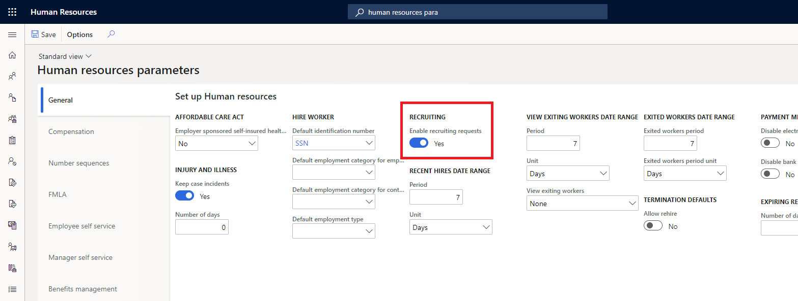
Add a recruiting request location
If your organization has multiple locations, you can add them so requestors can select a location where the new recruit will be working. The location will be included in the job posting.
In the search bar, enter recruiting request location.
Select New.
In the Recruiting request location field, enter the location name.
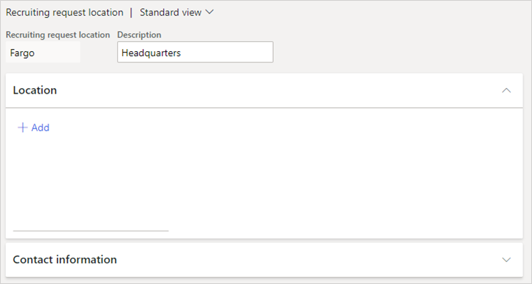
In the Description, enter a description for the location.
Under Location, select Add. If the New address popout appears, enter the address for the location.
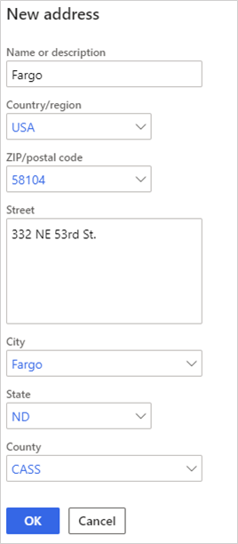
Under Contact information, enter the information for the location's contact.
Select Save.
Add a recruiting request
Managers can submit recruiting requests in Human Resources. If you use a separate recruiting application, completing these steps will send a recruiting request and start the recruiting process in that application. Otherwise, complete this procedure to begin the workflow for your own internal recruiting process.
Select Employee self service.
Select the My team tab.
Select Request to recruit.
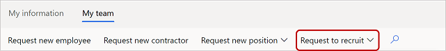
Complete the Description, Job, and Estimated start date fields.
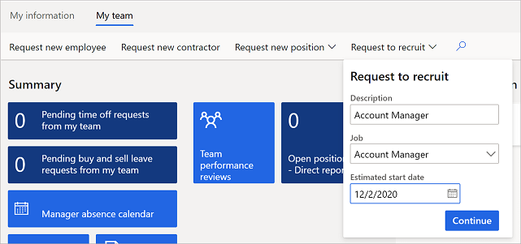
Select Continue. The recruiting request for your position appears.
Under General, select a recruiter from the Recruiter dropdown, and then select a location from the Recruiting request location dropdown.
Under Job, change any information as needed, and then select Create details from job.
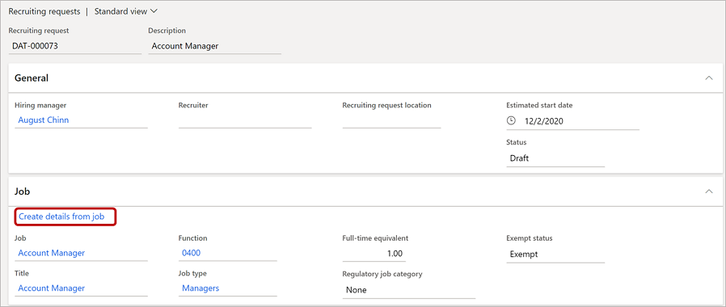
The rest of the recruiting request will populate with the default information for the job you entered.
Under External description, enter an external-facing job description.
Under Positions, select Add, and then select a position for this recruiting request.
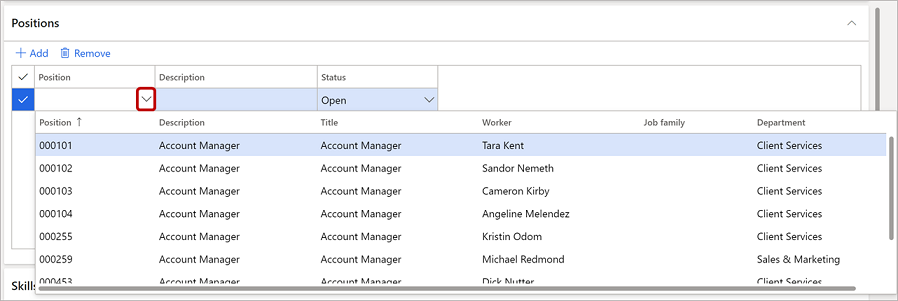
Under Skills, select Add, and then select a skill.
Under Educational requirements, select Add, and then select values from the Education and Level of education dropdowns.
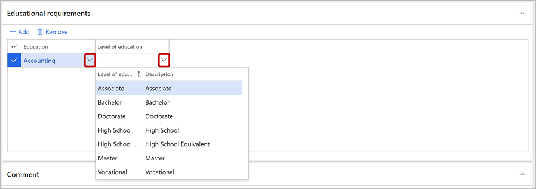
Under Comment, add comments as necessary.
Under Compensation, select a level from the Level dropdown, and then adjust Low threshold, Control point, and High threshold as necessary.
When your recruiting request is complete and you're ready to start the recruiting process, select Activate in the menu bar.

- Select Save.
View and edit your recruiting requests
If you're a manager and want to view your own requests:
Select Employee self service.
Select the My team tab.
Under My team information, select the Recruiting requests tab.
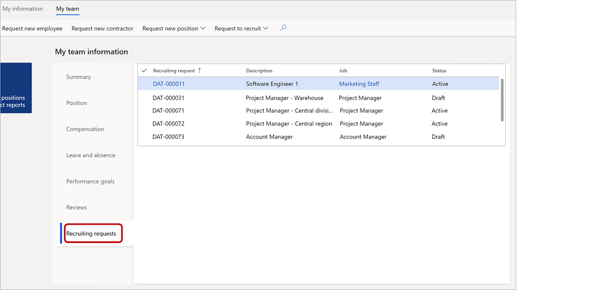
To view or edit a recruiting request, select it in the grid.
If you're an HR pro and want to view all recruiting requests:
Select Personnel management.
Select Recruiting requests.
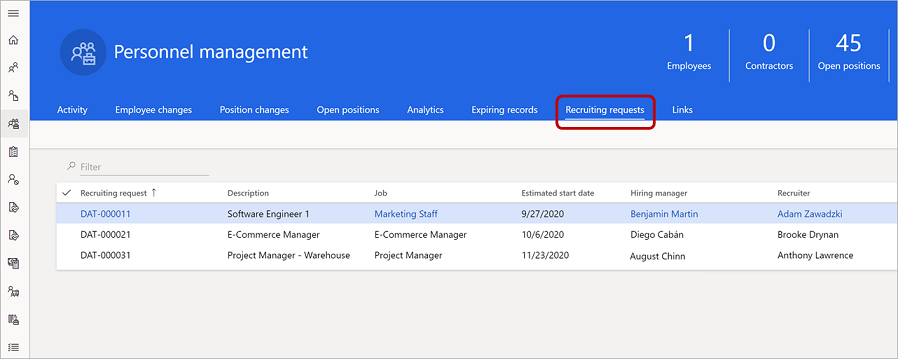
To view or edit a recruiting request, select it in the grid.
Add or edit a candidate profile
If your organization has integrated with another application to manage recruiting requests, recruiting requests are forwarded to that application. The recruiting application then sends candidate information back to Human Resources. Otherwise, you can follow your own internal recruiting processes and enter candidate information manually.
Select Personnel management.
Select Links.
Under Recruiting, select Candidates.
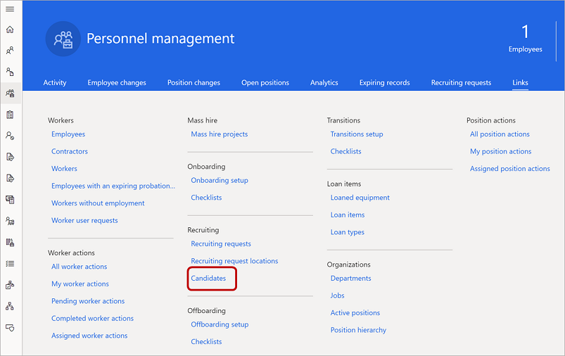
To add a candidate, select New. To edit an existing candidate, select the candidate from the list and then select Edit. The candidate profile appears.
Under Candidate summary, enter or edit the candidate information as necessary.
Under Recruiting request, select a recruiting request to link the candidate to. Then complete the Estimated start date, Hiring manager, Position, and Description fields as appropriate.
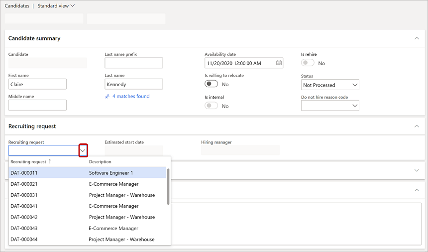
Complete all the information in the following areas that you want to include in the candidate's record:
- Comments
- Professional experience
- Contact information
- Education
- Skills
- Certificates
- Screenings
Select Save.
Hire a candidate
When you're ready to hire a candidate, follow this procedure to transition the candidate to an employee.
On the candidate form, select Hire.
On the Hire new worker form, under Details, complete all the fields.
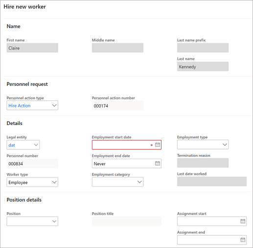
Under Position details, verify and change information as necessary.
Under Onboarding checklists, select the relevant onboarding checklists for this employee.
Select Continue to create the employee record.
Note
Depending on your organization's workflows, the candidate record may go through additional approval steps before becoming an employee record.
Decide not to hire a candidate
If you decide not to hire a candidate, follow this procedure to remove them from the vetting process.
On the candidate form, select Do not hire.
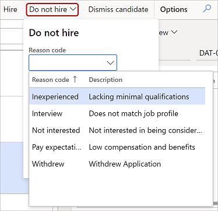
Select a Reason code and include any comments.
Select OK.
Dismiss a candidate
If needed, you can dismiss a candidate after hiring them. For example, a candidate might reject your offer or not show up on their first day.
On the candidate form, select Dismiss candidate.
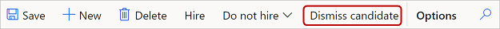
See also
Configure Common Data Service virtual entities
Organize your workforce
Set up the components of a job